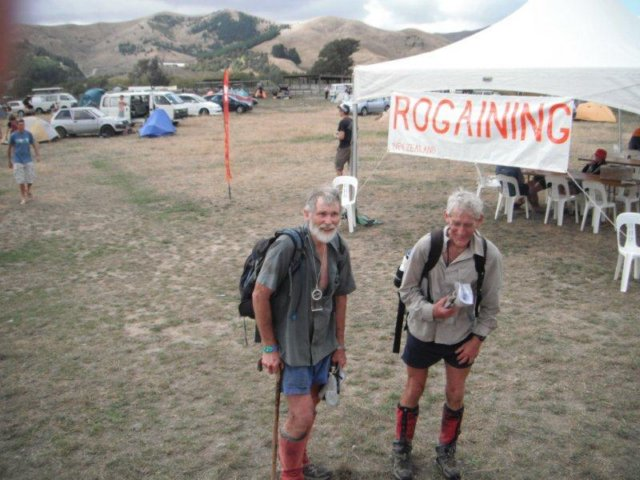

New Zealand Rogaining Association
Life Members
In October 2002 the first AGM of the NZRA was held. Present were:- T Barnfield
- G Hunter
- P Bones
- A Buchanan
- B Meder
- P Dilks
- P Squires
- A Stow
- B Kennedy
- T Faulkner
- J Elliot
- D Laurie
- B Smith
Present were three people who have been contributing to rogaining even before then and continue to this day.
- P Squires
- B Kennedy
- G Hunter
In Dunedin Bob Cunninghame was competing in and organizing events
- B Cunninghame

Peter Squires

Look though the results of National Championship. The name Peter Squires appears commonly and if it is not in the results it is most likely in the list of organizers.
Bill Kennedy
If you look through the old history of ultra distance running in Canterbury the name Bill Kennedy appears often. It was a natural step to rogaines. Not only competing but always in the background with little recognition.
Grant Hunter
You will not often see Grant's name in results
Bob Cunninghame
He is awesome